OTIUM is the practice of deliberate leisure. In the classical sense, otium is not escape from work but time when attention returns to memory, landscape, and thought — without a utilitarian deadline.
We shape routes for lingering, not for checklist tourism. The goal is presence in a place rather than consumption of sights.
OTIUM is not a tour operator. It is an invitation to walk, pause, and leave a route unfinished if the light on a façade deserves another minute.
City symbols
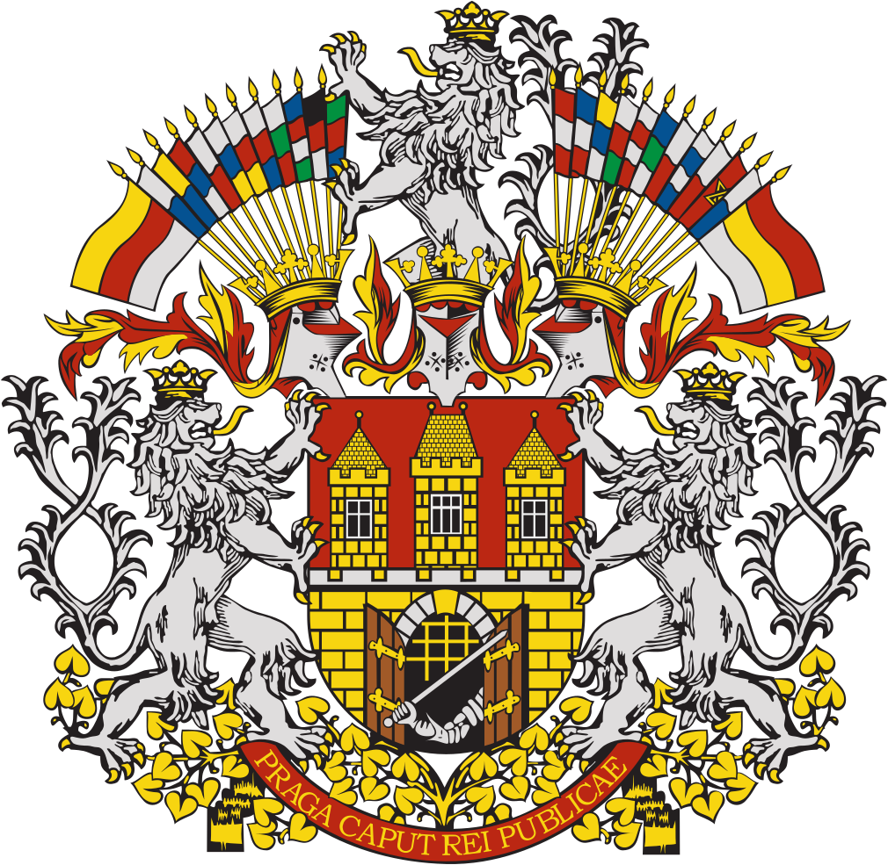
Prague
Guide. Places in this edition: 33.
Basilica of St. Peter and St. Paul, Vyšehrad
Bazilika sv. Petra a Pavla
Address: Vyšehrad fortress, Prague 2 | Style: Neo-Gothic exterior, Art Nouveau interior
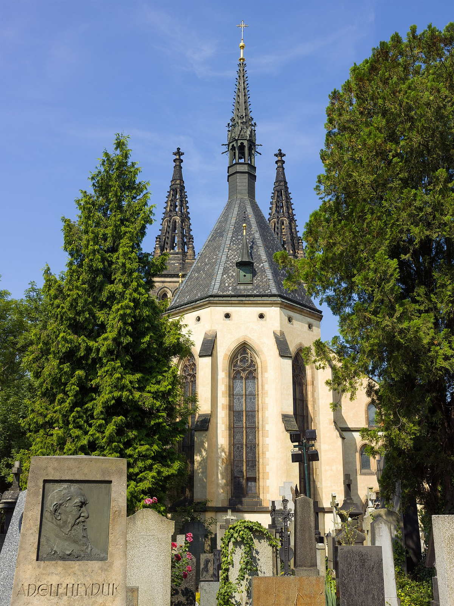
Neo-Gothic basilica with striking twin spires inside the Vyšehrad fort—associated with the Czech national cemetery Slavín nearby.
Facts and details
Composers such as Dvořák are buried in the adjacent cemetery.
Ramparts offer views of the Vltava and New Town.
History
Older church on site; present form largely 19th-century reconstruction with Art Nouveau interior painting.
Significance
Vyšehrad is a legendary “first Prague castle” in medieval chronicles and a quiet park above the river.
Charles Bridge
Karlův most
Address: Between Old Town and Malá Strana over the Vltava | Style: Gothic bridge with Baroque sculpture
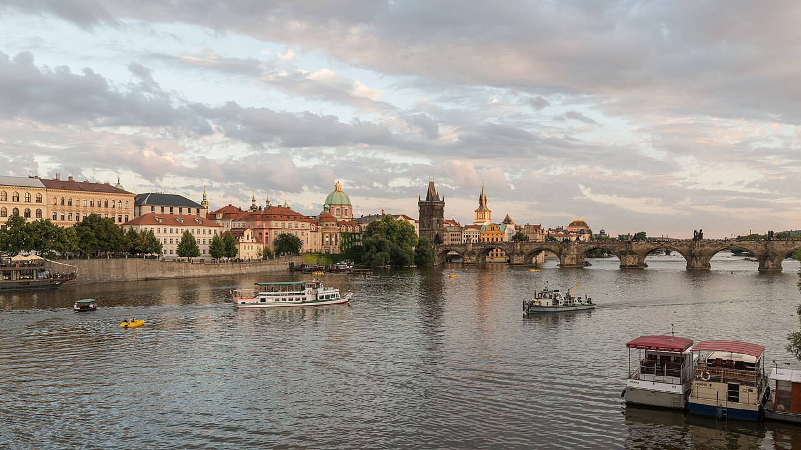
A medieval stone bridge lined with statues, now a pedestrian spine between the castle side and the Old Town. Early mornings and late evenings are quieter for crossing.
Facts and details
The bridge is about 516 metres long and rests on 16 arches.
Many statues are 17th–18th century copies; originals are partly in the National Museum.
History
Founded in 1357 under Charles IV; the Baroque sculptures were added from the late 17th century onward. The bridge has been repaired after floods and military action.
Significance
The iconic image of Prague in travel literature and a daily route for residents as well as visitors.
Church of Our Lady Victorious
Pražské Jezulátko
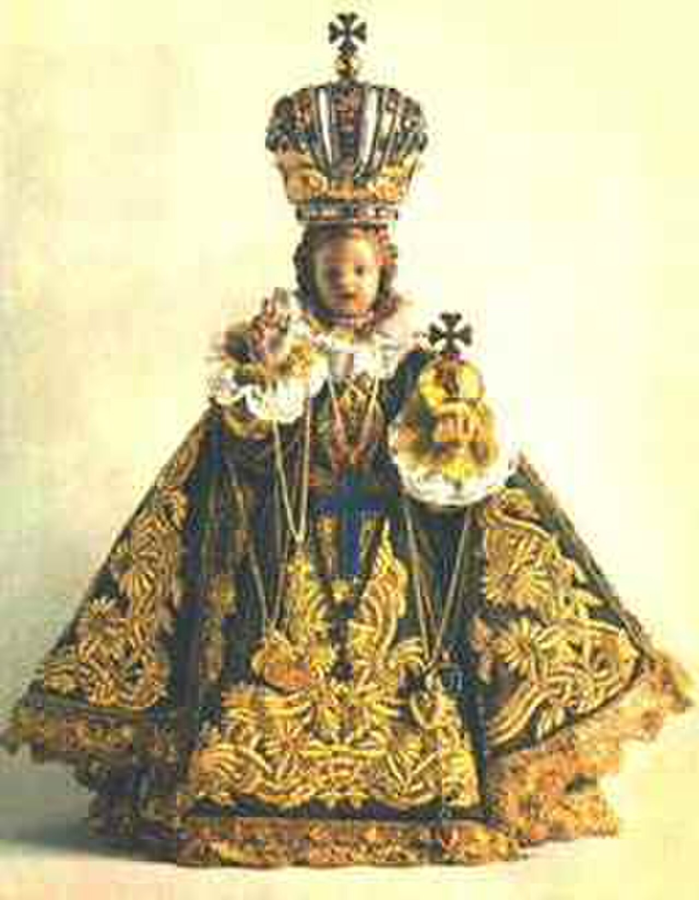
Dancing House
Tančící dům
Address: Jiráskovo náměstí 1981/6 | Style: Deconstructivist / late modern
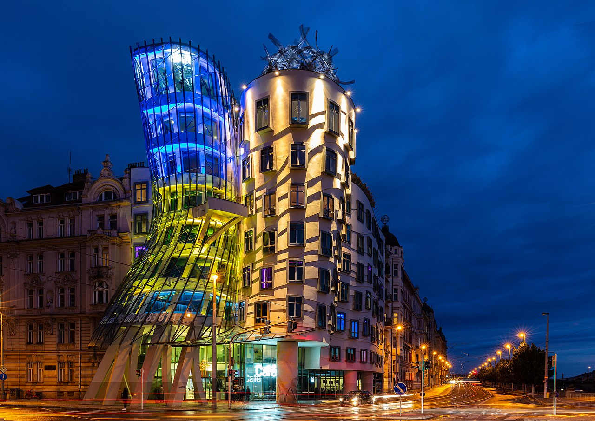
A deconstructivist office building by Frank Gehry and Vlado Milunić, nicknamed “Fred and Ginger” for its paired curved volumes.
Facts and details
A glass bar on the top offers views toward the castle.
It stands opposite the river from the National Theatre area.
History
Completed in 1996 on a site cleared by WWII bombing; controversial at first, now a postcard favourite.
Significance
Represents post-1989 architectural openness on the riverside.
Kampa and Charles Bridge
Kampa a Karlův most
Address: Kampa island, Malá Strana | Style: Urban park and embankment
Park-like island by the river: willows, museum of modern art at one end, and classic views back toward the Charles Bridge arches.
Facts and details
The Čertovka side canal is nicknamed “Prague’s Venice”.
Outdoor sculptures include the famous babies by David Černý on nearby lawns.
History
Former mills and gardens; gradually landscaped for public leisure from the 20th century.
Significance
Calmer riverside space minutes from the dense tourist core.
Kinský Palace (Old Town Square)
Palác Kinských
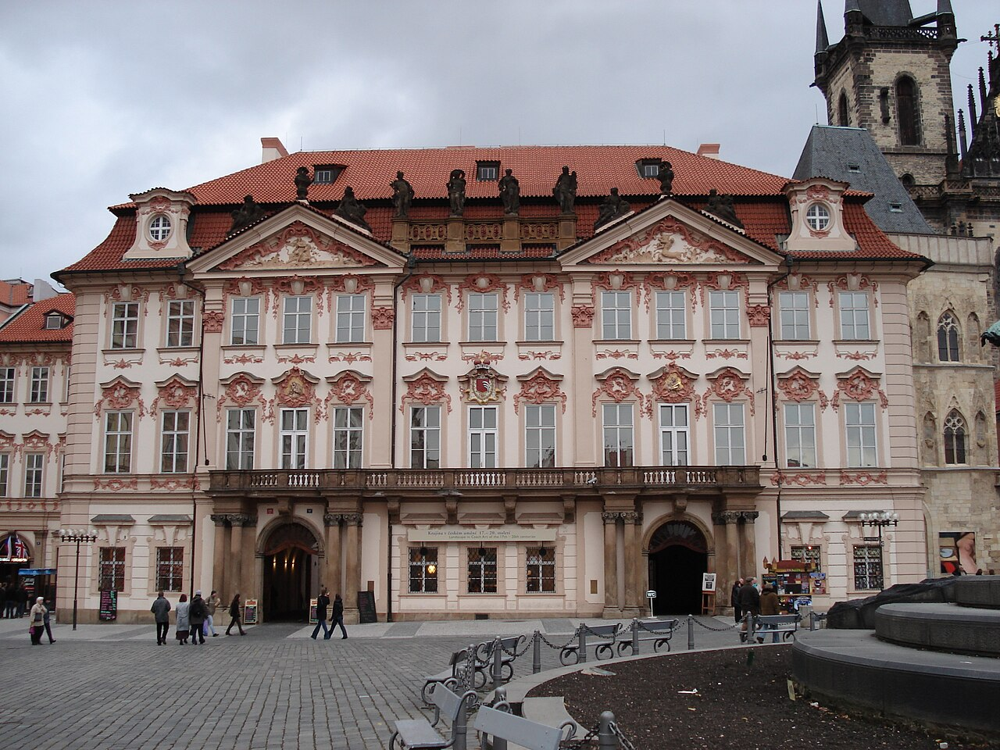
Lennon Wall
Lennonova zeď
Address: Velkopřevorské náměstí, Malá Strana | Style: Urban wall / street art
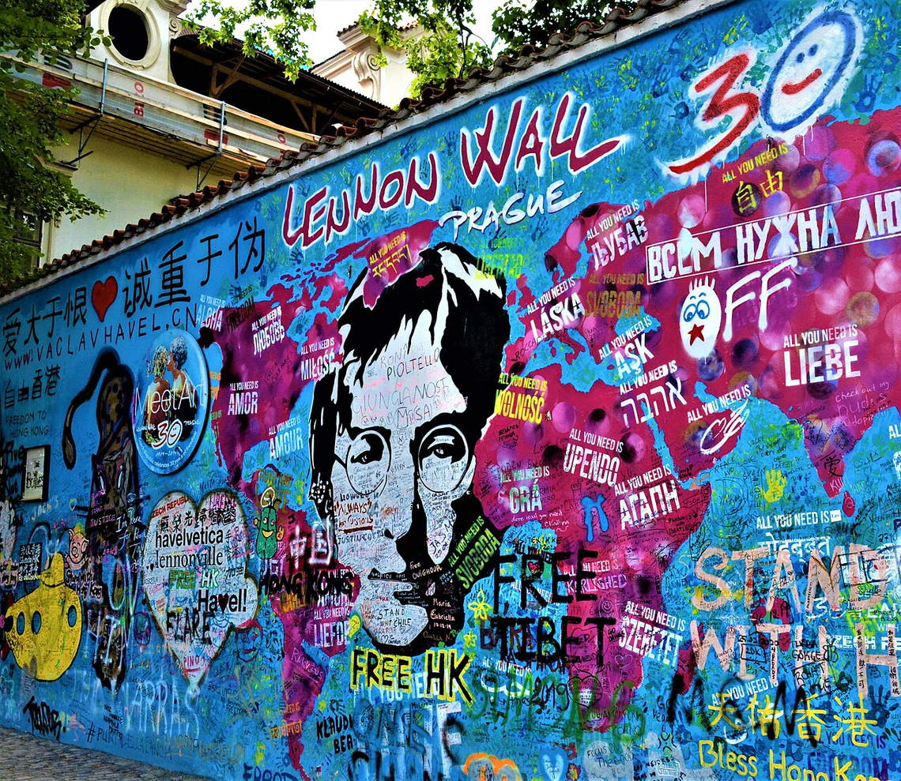
A wall covered in graffiti, lyrics, and messages—once an unofficial memorial after John Lennon’s death, now repainted freely by visitors.
Facts and details
The wall is on ground belonging to the Sovereign Military Order of Malta.
Content changes constantly; photos date quickly.
History
In the 1980s youth wrote protest lyrics here under communist censorship; ownership and repainting cycles continue today.
Significance
Symbol of free expression in Cold War Prague and a tourist stop near Kampa.
Letná Metronome
Metronom na Letné
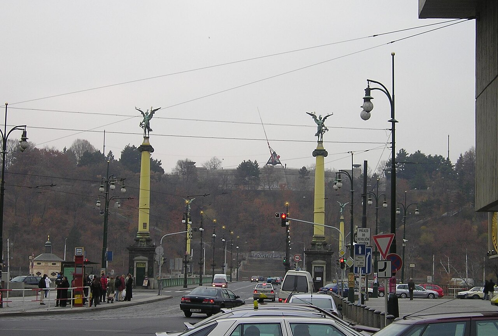
Letná Park viewpoint
Letná
Mirror Chapel (Klementinum)
Klementinum
Municipal House
Obecní dům
Address: Náměstí Republiky 5 | Style: Art Nouveau (Czech Secession)
Art Nouveau concert and civic hall: façade mosaics, Mucha-decorated interiors in places, and the main home of the Prague Symphony Orchestra.
Facts and details
Guided tours show representative rooms when concerts allow.
The building combines café, exhibition spaces, and the Smetana Hall.
History
Built 1905–1912 on the site of the former royal court; the Czechoslovak independence was declared here in 1918.
Significance
Prime example of Czech Secession architecture and a working performance venue.
National Museum
Národní muzeum
Address: Václavské náměstí 68 | Style: Neo-Renaissance
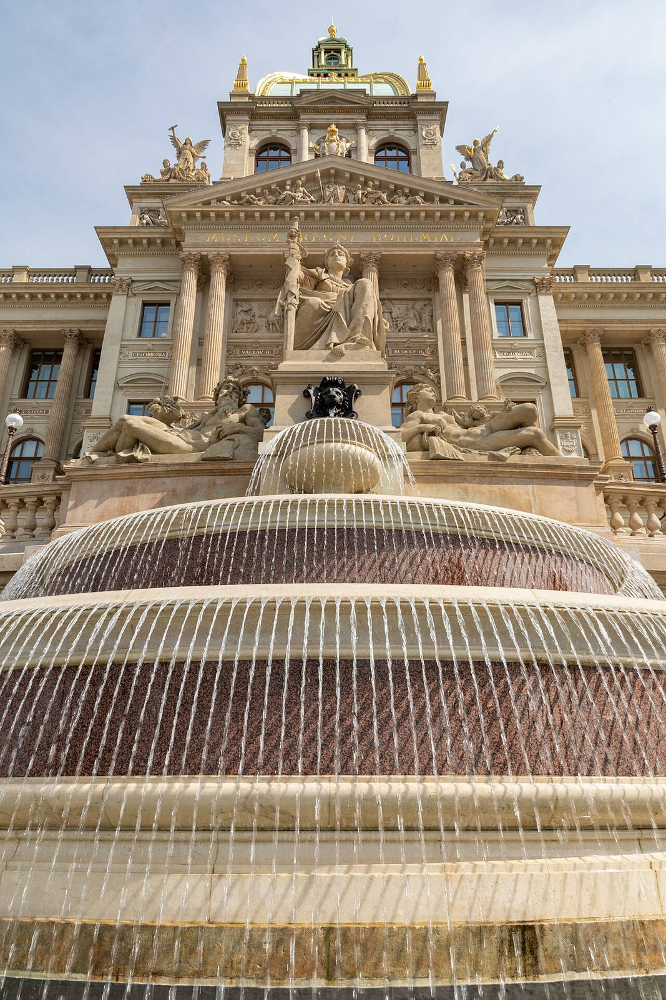
Neoclassical museum building at the head of Wenceslas Square; collections span natural sciences, history, and arts.
Facts and details
A new building and underground link connect across the tram underpass.
The dome and staircase are favourites for interior photography.
History
Founded in 1818; the dominant historical building was completed in the 1890s and underwent major renovation in the 2010s.
Significance
Flagship state museum and architectural anchor of the square.
National Technical Museum
Národní technické muzeum
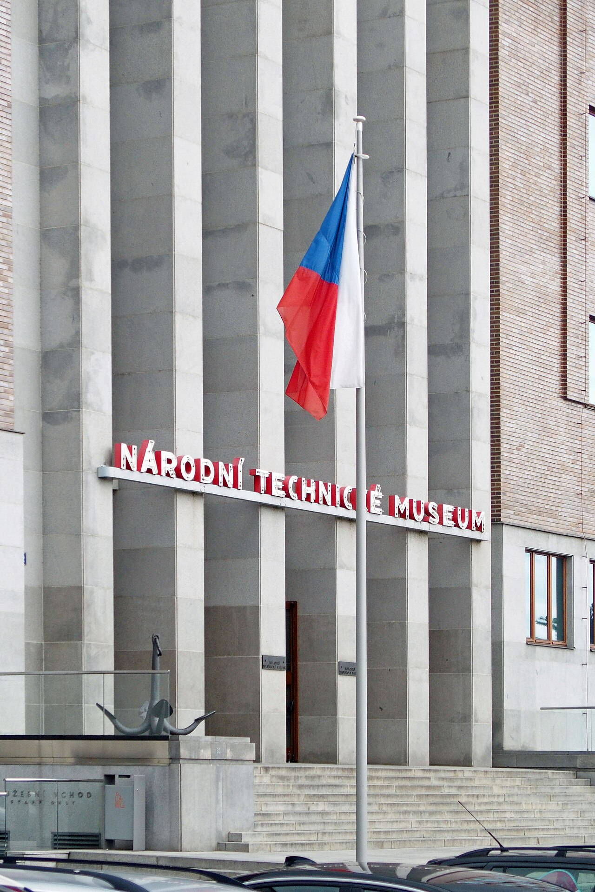
National Theatre
Národní divadlo
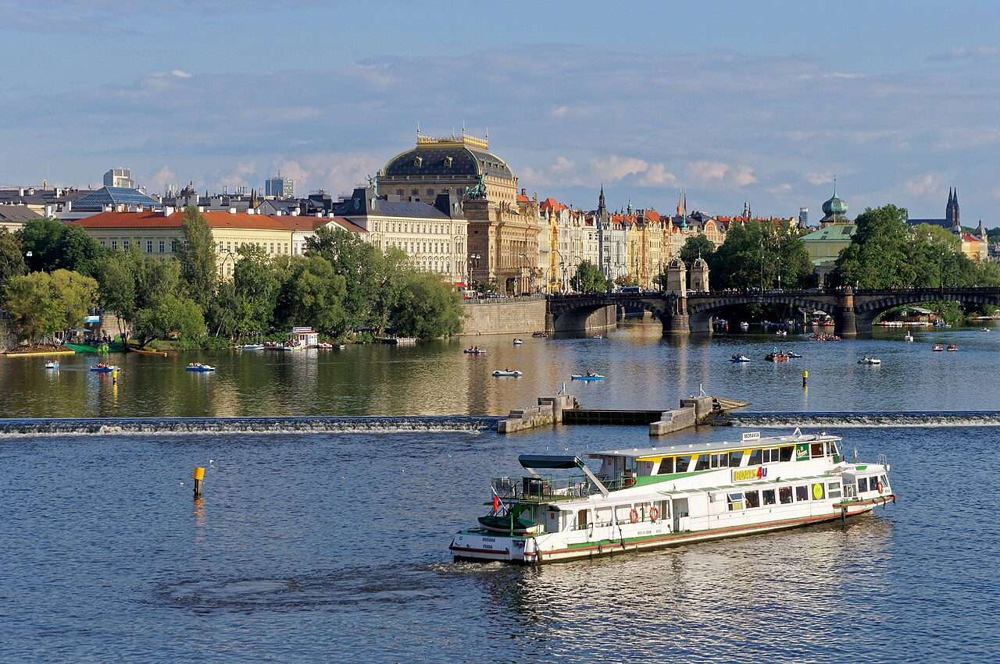
Náplavka (Rašínovo nábřeží)
Rašínovo nábřeží
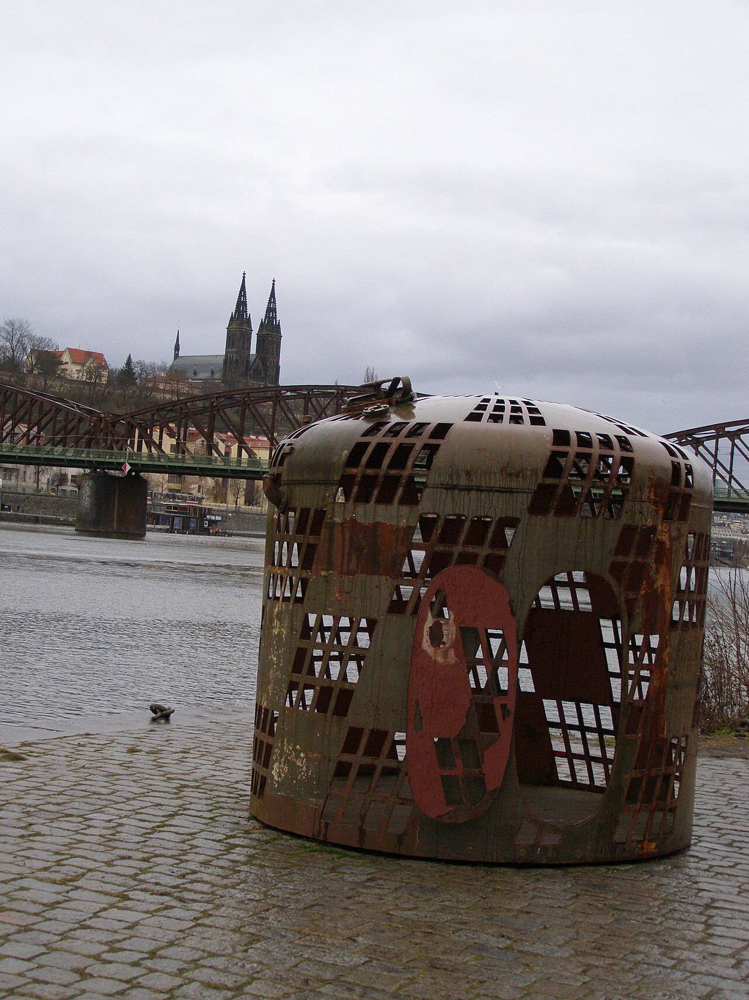
Old Jewish Cemetery
Starý židovský hřbitov
Address: Josefov, Old Jewish Cemetery | Style: Historic cemetery landscape
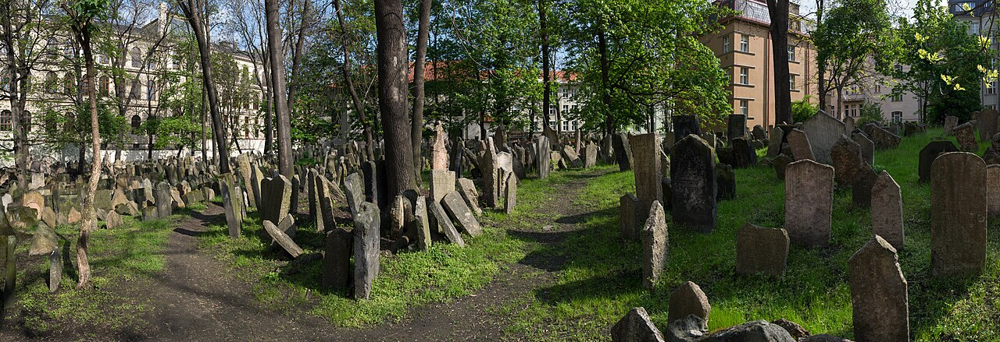
Layered gravestones crowded on a small plot—one of Europe’s oldest surviving Jewish burial grounds, now part of the Jewish Museum circuit.
Facts and details
Rabbi Loew (Maharal) is traditionally associated with burials in this ground.
Access is usually with a combined ticket to nearby synagogues.
History
Used from the early 15th century until 1787; because space was tight, earth was added and stones overlap in depth.
Significance
A poignant record of the Prague Jewish community before modern urban clearance and Holocaust losses.
Old Town Hall
Staroměstská radnice
Address: Staroměstské náměstí 1 | Style: Gothic core with later additions
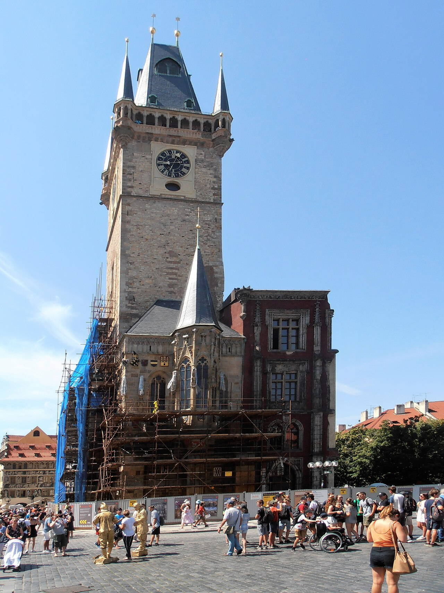
Gothic tower and administrative complex; the astronomical clock is on its southern face. The tower offers views over the red roofs of the Old Town.
Facts and details
Parts of the building can be visited on guided routes including the underground.
The chapel interior includes notable Gothic vaulting.
History
Origins in the 14th century; the Gothic tower and chapel are the most prominent surviving medieval parts after wartime damage and rebuilds.
Significance
Seat of Old Town self-government for centuries and a landmark silhouette on the square.
Old Town Square
Staroměstské náměstí
Address: Staré Město, Prague 1 | Style: Gothic and Baroque façades
The main square of the Old Town: Týn Church, the Old Town Hall with the astronomical clock, cafés, and seasonal markets.
Facts and details
The Jan Hus monument (1915) anchors the centre of the square.
Christmas and Easter markets draw large crowds here.
History
The square grew from a market place; public executions, coronation processions, and modern protests have all left their mark on its memory.
Significance
Social and ceremonial heart of the historic centre and a starting point for many walking routes.
Petřín Lookout Tower
Petřínská rozhledna
Address: Petřín Hill | Style: Late 19th-century iron tower
A steel lookout tower inspired by the Eiffel Tower, smaller but placed high on Petřín hill for sweeping views over Prague.
Facts and details
About 299 steps lead to the main viewing platform.
The funicular from Újezd is part of the public transport network.
History
Built for the 1891 Jubilee Exhibition; carried up the hill by funicular or footpaths.
Significance
Favourite panorama point and a recognizable silhouette from the city below.
Powder Gate
Prašná brána
Address: Náměstí Republiky / Celetná | Style: Late Gothic tower
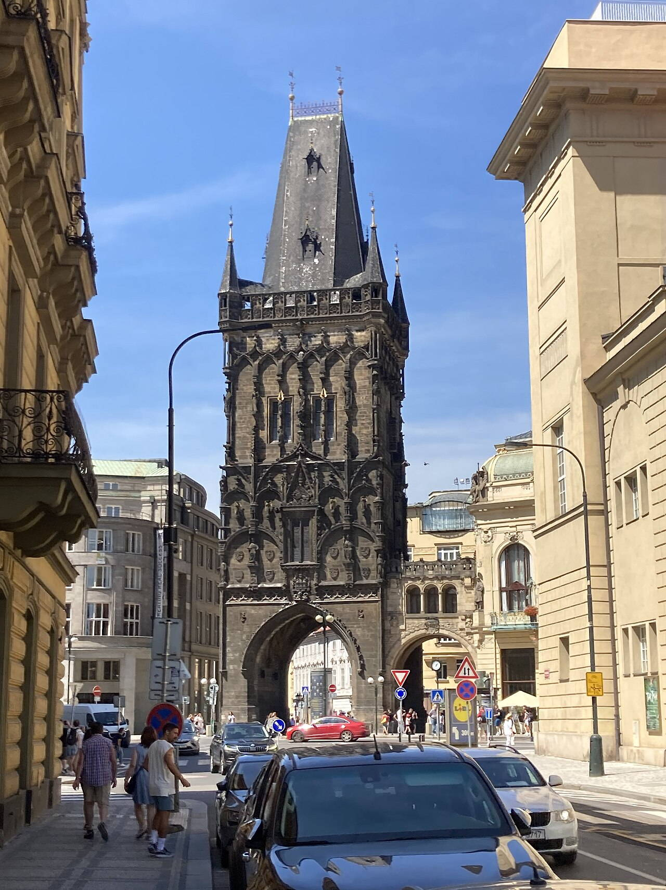
A Gothic gate-tower that was once one of the entrances to the Old Town; decorative stonework rises above pedestrian traffic.
Facts and details
You can climb the tower for a view along Celetná.
It stands near the Municipal House and the modern shopping district.
History
Built in the 15th century; used for gunpowder storage at one time, hence the name. Linked visually to the route toward the Old Town Square.
Significance
Landmark boundary between Old and New Town and a backdrop for coronation processions of old.
Prague Astronomical Clock
Pražský orloj
Address: Old Town Hall, Old Town Square | Style: Gothic clock integrated into the town hall
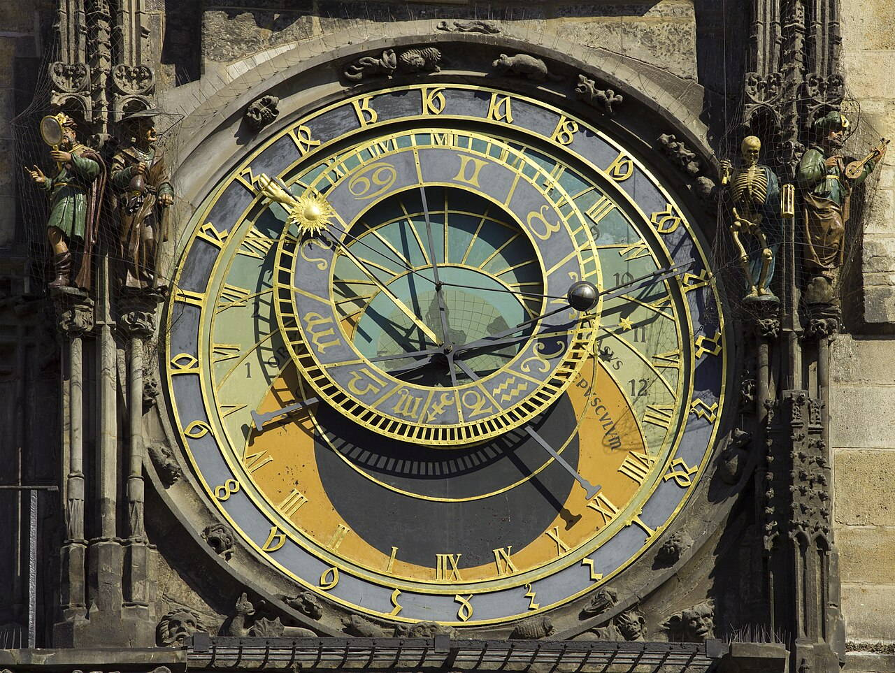
A medieval clock with an astronomical dial, apostles in the windows, and the famous skeleton figure (“Death”) ringing the bell.
Facts and details
Crowds gather on the hour to watch the apostles’ procession.
The clock was damaged in 1945 and restored in the following years.
History
The mechanism dates from 1410 (astronomer Jan Šindel and clockmaker Mikuláš of Kadaň); later layers added the calendar and figurine show.
Significance
One of the oldest operating astronomical clocks and a symbol of Prague craftsmanship.